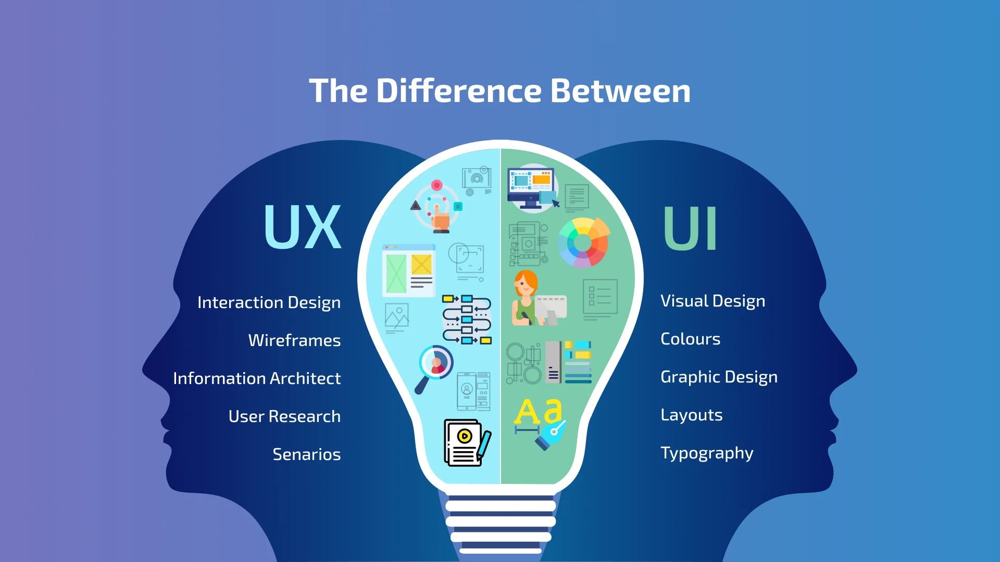
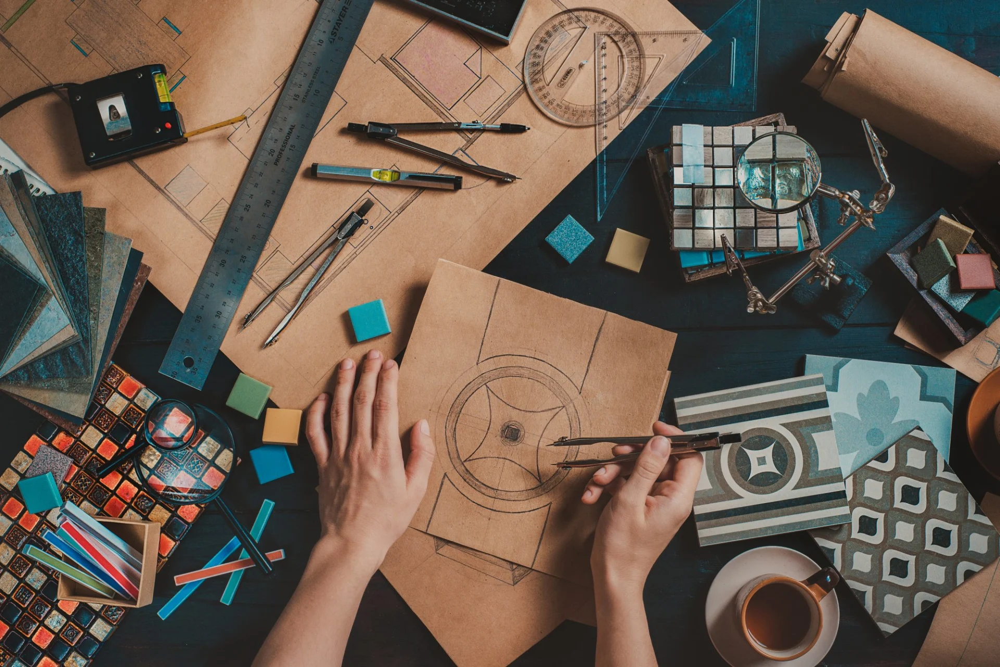

UI Design
Designing a web page involves several key steps, from planning and content creation to visual design and technical implementation. First, define the purpose, target audience, and content strategy for the website.

UI Design: Focus: Visual elements, layout, and interactivity of a digital product. Key tasks: Designing page layouts, choosing color palettes and fonts, creating interactive elements (buttons, menus, etc.), and developing high-fidelity wireframes and mockups. Goal: To create an aesthetically pleasing and easy-to-navigate interface.
UX Design
User Experience (UX) design is the process of creating products and services that are easy, effective, and enjoyable for users to interact with. It focuses on the entire user journey, encompassing all aspects of a user's interaction with a product or service, from initial discovery to final use and beyond. UX design aims to make products and services that are not only functional but also satisfying and meaningful for the user. Here's a more detailed breakdown: What UX Designers Do: Understand User Needs: UX designers conduct research to understand user behaviors, motivations, and pain points. Define Solutions: They translate user needs into design solutions, creating wireframes, prototypes, and mockups to visualize the user experience.


User Experience (UX) design is the process of creating products and services that are easy, effective, and enjoyable for users to interact with. It encompasses all aspects of a user's interaction with a product, from initial awareness to final usage, aiming to make the experience meaningful and relevant.